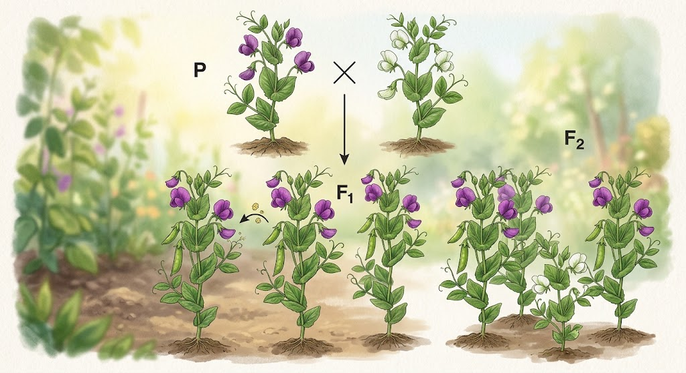

การผสมพันธุ์แบบลักษณะเดียว
การผสมพันธุ์แบบลักษณะเดียว คือ การผสมพันธุ์ที่ศึกษาการถ่ายทอดลักษณะทางพันธุกรรม เพียง 1 ลักษณะในแต่ละครั้ง เช่น สีของเมล็ด รูปร่างของเมล็ด หรือความสูงของต้น โดยเป็นรูปแบบการทดลองสำคัญที่ เกรเกอร์ เมนเดล ใช้ในการศึกษาการถ่ายทอดลักษณะทางพันธุกรรมของต้นถั่วลันเตา
ในการผสมพันธุ์แบบลักษณะเดียว จะพิจารณา แอลลีล (Allele) ที่ควบคุมลักษณะนั้น โดยแอลลีลอาจมีลักษณะ เด่น หรือ ด้อย เช่น กำหนดให้ T แทนลักษณะต้นสูงซึ่งเป็นลักษณะเด่น และ t แทนลักษณะต้นเตี้ยซึ่งเป็นลักษณะด้อย
หากนำต้นสูงพันธุ์แท้ที่มีจีโนไทป์ TT ผสมกับต้นเตี้ยพันธุ์แท้ที่มีจีโนไทป์ tt จะได้การผสมเป็น TT × tt เซลล์สืบพันธุ์จากต้น TT จะมีแอลลีล T ส่วนเซลล์สืบพันธุ์จากต้น tt จะมีแอลลีล t เมื่อนำมารวมกัน ลูกในรุ่นแรก หรือ F₁ จะมีจีโนไทป์ Tt ทั้งหมด และเนื่องจาก T เป็นลักษณะเด่น ลูกทั้งหมดจึงแสดงฟีโนไทป์เป็นต้นสูง
จากนั้น หากนำต้นรุ่น F₁ ที่มีจีโนไทป์ Tt มาผสมกัน จะได้ Tt × Tt แต่ละฝ่ายสามารถสร้างเซลล์สืบพันธุ์ได้ 2 แบบ คือ T และ t เมื่อนำมาจับคู่กันจะได้ลูก 4 รูปแบบ ได้แก่ TT, Tt, Tt และ tt ดังนั้นการผสม Tt × Tt จะมีอัตราส่วนจีโนไทป์เป็น 1 TT : 2 Tt : 1 tt หรือคิดเป็น 25% TT, 50% Tt และ 25% tt ส่วนอัตราส่วนฟีโนไทป์จะเป็น 3 ต้นสูง : 1 ต้นเตี้ย เนื่องจาก TT และ Ttแสดงลักษณะเด่นเหมือนกัน ส่วน tt จะแสดงลักษณะด้อย การผสมพันธุ์แบบลักษณะเดียวจึงช่วยให้เห็นรูปแบบการถ่ายทอดลักษณะทางพันธุกรรมอย่างชัดเจน และเป็นพื้นฐานในการทำความเข้าใจ กฎการแยกของเมนเดล (Law of Segregation) ซึ่งกล่าวว่าแอลลีลที่เป็นคู่กันจะแยกออกจากกันในระหว่างการสร้างเซลล์สืบพันธุ์ และจะกลับมารวมกันอีกครั้งเมื่อเกิดการปฏิสนธิ ความรู้เรื่องนี้สามารถนำไปใช้ในการคาดการณ์ลักษณะของลูกหลาน และเป็นพื้นฐานสำคัญของการศึกษาพันธุศาสตร์ในปัจจุบัน